No Grounds for Panic
Fifteen science-fiction stories, one black-and-white world.
Alex Kartashov and I wrote these stories between 2012 and 2017. Each one is set in a world slightly different from ours, and since then the world has been catching up.
I developed the illustrations in Midjourney, then combined and refined them in Photoshop. Claude helped with the translation and the layout of the 200-page book.
The challenge was giving very different stories one shared world: fine lines, dots and layered scenes in black and white.
Book slideshow
Turn the pages or choose an illustration below.
Consistency check
Faces, story after story


Story openings, spread by spread
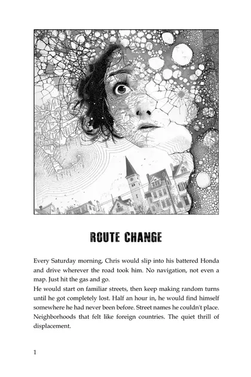
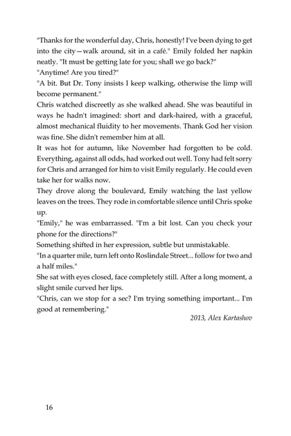
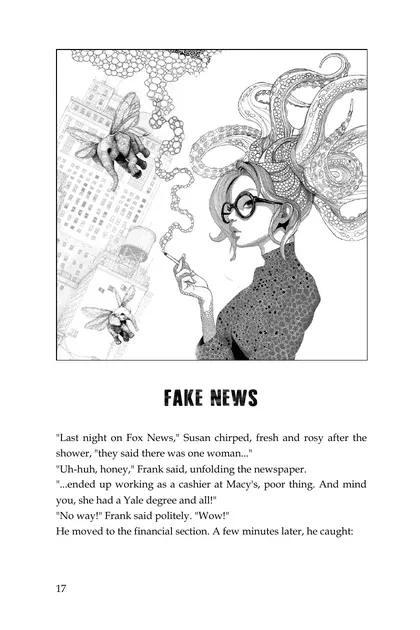
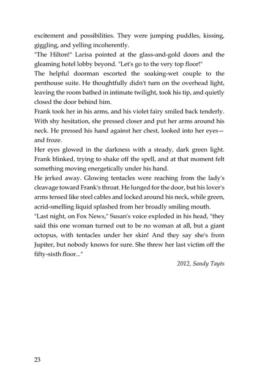
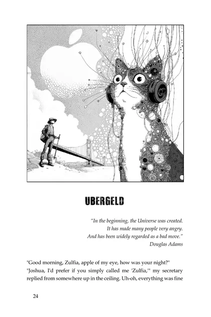
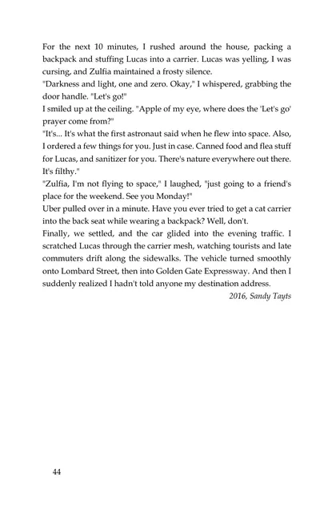
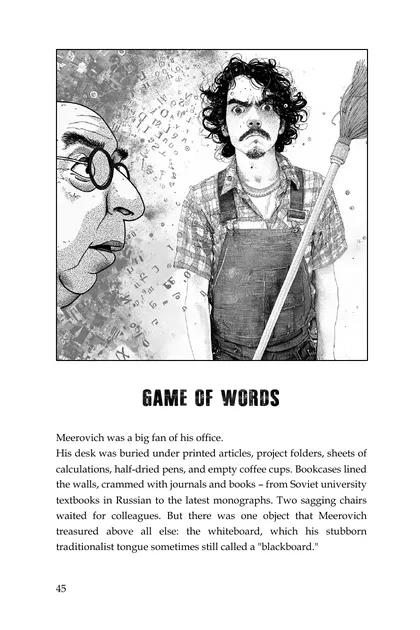
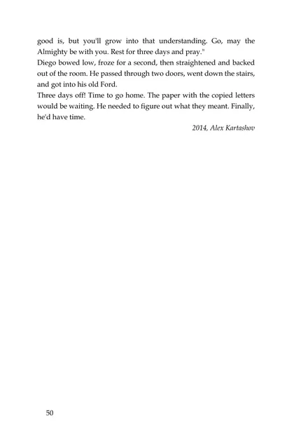
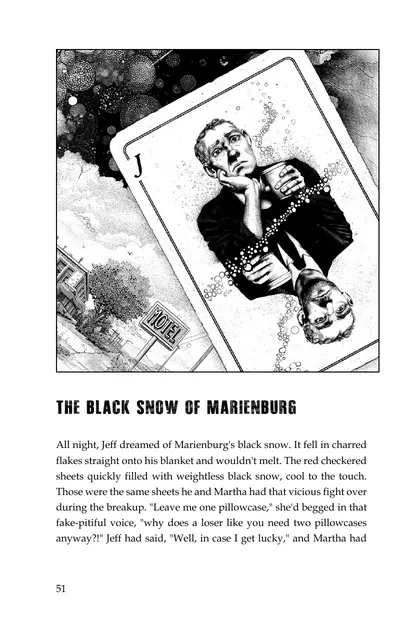
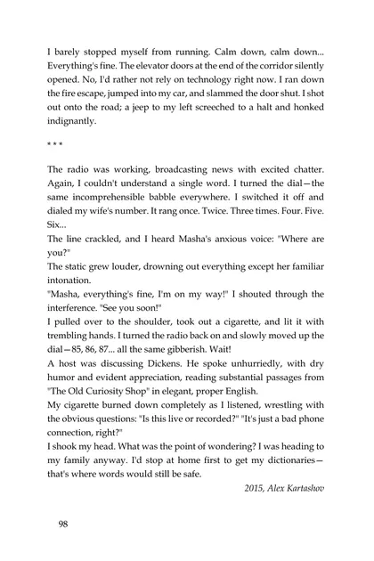
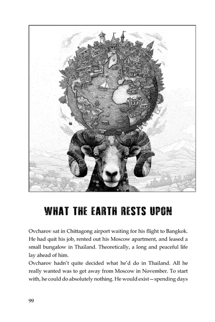
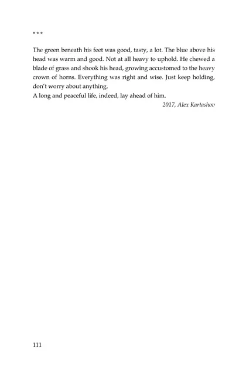
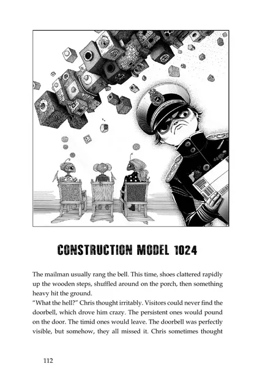
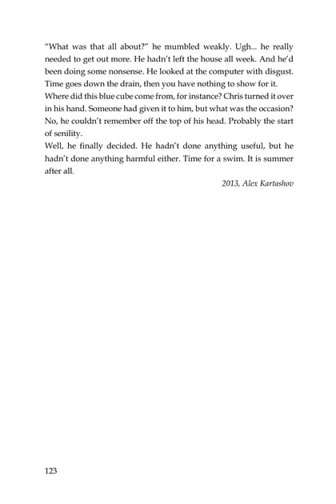
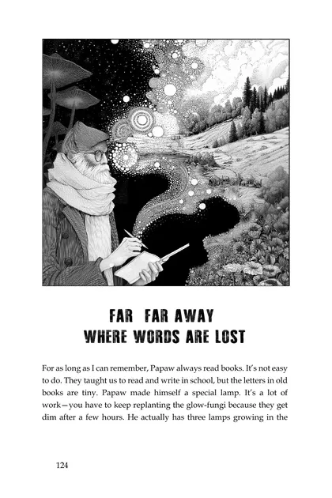
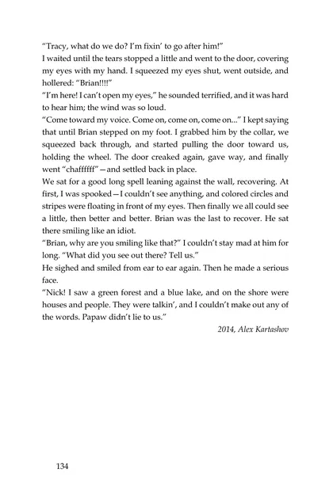
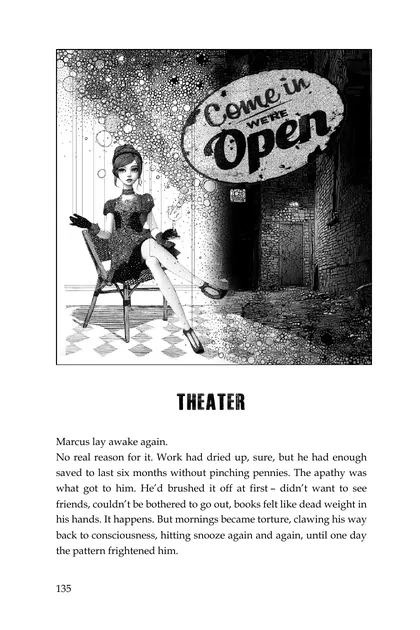
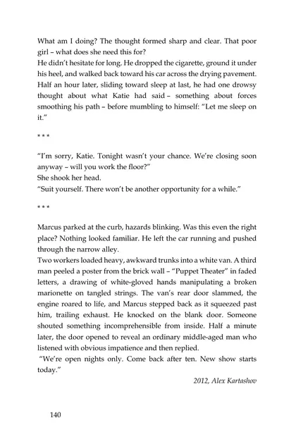
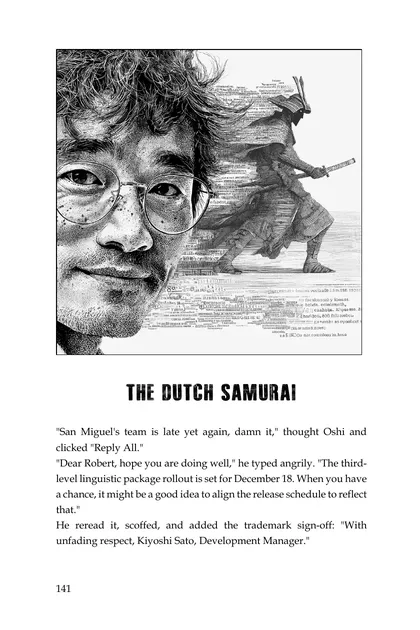
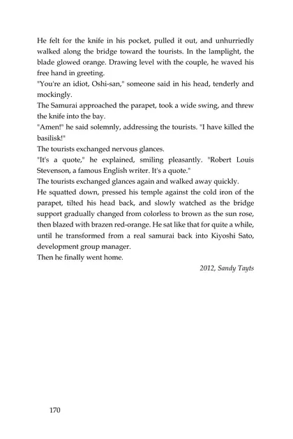
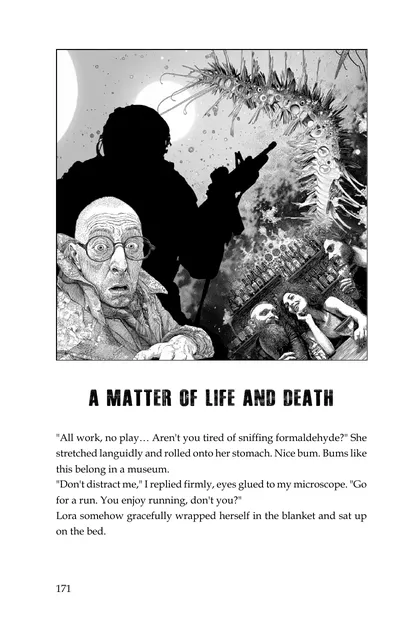
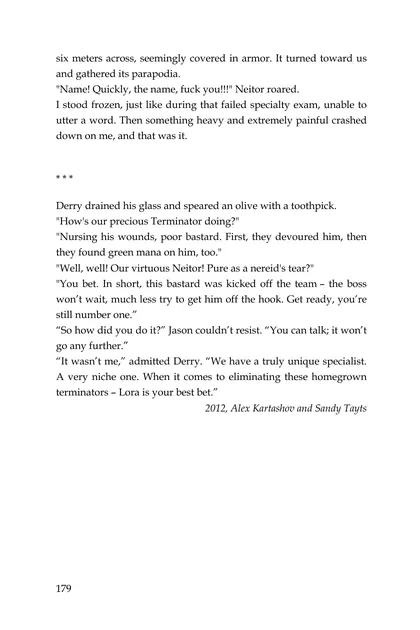
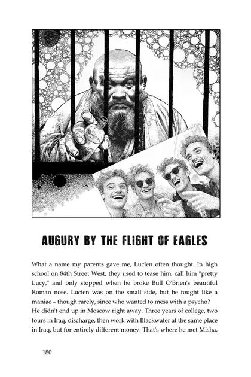
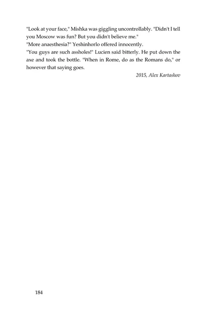
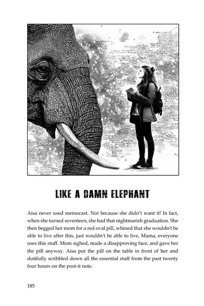